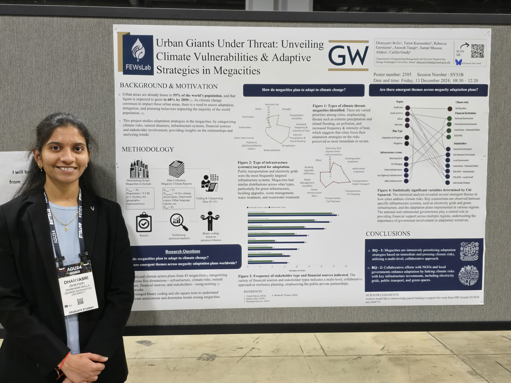
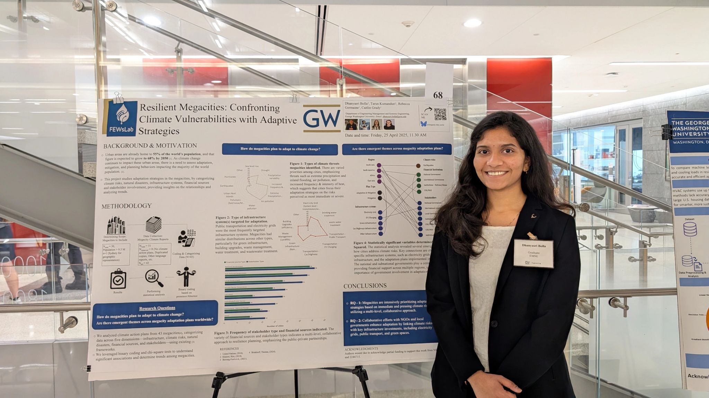

About Me
Hi! I'm Dhanyasri Bolla, a Master's student in Engineering Management at The George Washington University, with a background in Electronics and Communication Engineering from SVNIT, India. I’m passionate about combining technical thinking with strategic decision-making to address complex, real-world problems.
My work lies at the intersection of data analysis, systems thinking, and sustainable development. Recently, I’ve been diving deep into climate adaptation research—analyzing how megacities are responding to climate risks and identifying co-benefits in their adaptation strategies. Beyond research, I’ve worked on web development, marketing analytics, and systems architecture projects that showcase my versatility across disciplines.
I’m always excited to learn, collaborate, and build meaningful solutions—whether it’s through data, design, or leadership.
When I'm not working, you’ll find me exploring urban spaces, planning events with my grad student community,
Education
🎓 Master of Science in Engineering Management
The George Washington University
Washington, D.C. | Expected December 2025
- Relevant Courses: Marketing Analytics, R Programming, Systems Engineering, Project Management, Systems Thinking, Policy Modelling, Corporate Finance
- Capstone Project: Evaluating the Carbon Emission Reduction Potential of Transitioning San Diego's energy generation to 60% Renewable Energy
🎓 Bachelor of Technology in Electronics & Communications
Sardar Vallabhbhai National Institute of Technology
India | May 2023
- Focus Areas: Embedded Systems, Digital Communication, Programming in C and Python
- Capstone Project: 5G waveforms performance analysis over 3D channel model
Experience
🔬FEWS LABS, George Washington University
Graduate Research Assistant
May 2024 – Present
- Conducted a comparative analysis of 48 megacities' climate action plans.
- Used Python, Excel, and Pandas with chi-square and Cramer’s V for relational insights.
- Coded 430+ adaptation co-benefits using binary classification for statistical rigor.
- Applied LLMs to analyze textual data from climate plans and extract patterns.
- Identified global co-benefit trends (health, equity, biodiversity, food security).
- Presented research at AGU 2024 and co-authored a forthcoming academic paper.
- Informed urban policy frameworks for high-density climate-vulnerable cities.
Technologies & Skills: Python, Pandas, Excel, Chi-square Test, LLMs, Data Visualization, Urban Climate Resilience
🌐 Business Web Solutions
Web Development Intern – June 2022 – Aug 2022
Enhanced a tourism site’s UX using responsive HTML/CSS/JS design. Integrated APIs, optimized backend, and performed cross-browser testing.
Technologies & Skills: HTML, CSS, JS, PHP, Responsive Design
📣 Unschool
Marketing & Operations Intern – Aug 2021 – Sep 2021
Led marketing campaigns with a team of 6, increasing course enrollments by 45% and improving lead conversion by 20% through workflow optimization.
Technologies & Skills: Team Leadership, Campaign Metrics, Digital Strategy
Research
Urban Giants Under Threat:Unveiling Climate Vulnerabilities & Adaptive Strategies in Megacities (In Progress)
Primary author of a research paper analyzing climate vulnerabilities and adaptation strategies in 48 global megacities.
- Conducted a comparative analysis of 48 megacities' climate action plans.
- Explored relationships between climate risks, infrastructure systems, disasters, financial mechanisms, and stakeholders.
- Applied chi-square tests and Cramer's V to identify significant associations between adaptation elements.
- Identified emergent global themes and regional disparities in urban adaptation efforts.
- Developed insights to support evidence-based climate policy for high-density urban regions.
Unveiling Co-Benefits in Human Adaptations to Climate Change: Insights from a Systematic Review (In Progress)
AGU 2024 Poster Presentation
Presented a poster titled “Urban Giants Under Threat” at the AGU Fall Meeting 2024 in Washington, D.C., focusing on climate vulnerabilities and adaptation strategies in megacities.
SEAS R&D Showcase - GW Engineering
Presented a poster titled “Resilient Megacities” at School of Engineering and Applied Sciences Research and Development Showcase at George Washington University in Washington, D.C., focusing on climate vulnerabilities and adaptation strategies in megacities.
GWU Innovation Fest Poster Presentation

Presented a poster titled “Resilient Megacities” at the Inaugural GW Innovation Fest at George Washington University in Washington, D.C., focusing on climate vulnerabilities and adaptation strategies in megacities.
Skills & Tools
📊 Data Analysis & Programming
- Python (Pandas, NumPy, Matplotlib, Seaborn)
- R (Tidyverse, dplyr, ggplot2)
- SQL, Spark (PySpark)
- Excel, Jupyter Notebooks
🔬 Research Skills
- Literature Review, Thematic Coding
- Comparative Policy Analysis
- Co-benefit Mapping (GAMI)
- Poster Presentation (AGU 2024)
🏗️ Systems Engineering
- SysML (ConOps, OV-1, Functional Decomposition)
- Capella (Arcadia Methodology)
- Systems Thinking
- Trade-off & Architecture Analysis
💼 Finance & Decision Modeling
- NPV, IRR, Payback Period
- Sensitivity & Risk Analysis
- Cost-Benefit Modeling in Excel
- Engineering Economics
📈 Statistical & Research Methods
- Chi-Square, Cramer’s V, Regression
- Survey Design, Conjoint Analysis
- Binary Variable Coding
- LLM-based Textual Analysis
🌐 Web Development
- HTML, CSS, JavaScript, PHP (basic)
- Responsive UI Design
- API Integration
- Git, GitHub, Netlify, Formspree
💡 Conceptual Knowledge
- Climate Adaptation & Resilience
- Urban Systems & Sustainability
- Infrastructure Policy & Risk Mapping
- UI/UX, Energy Emissions Forecasting
🤝 Soft Skills
- Leadership & Collaboration
- Problem Solving & Critical Thinking
- Public Speaking & Communication
- Time & Project Management
Projects
🔋 San Diego Renewable Energy Transition
Capstone Project
Modeled the impact of transitioning San Diego to 60% renewable electricity using scaled CAISO data. Forecasted CO₂ emissions reduction (30%) and cost savings ($1.56 Million/year) over 2025–2034. Explored how decentralized renewables improve urban resilience to wildfires and outages.
Technologies & Skills: Python, Pandas, Matplotlib, Excel, Data Modeling, Forecasting, Energy Systems Analysis, Climate Resilience
🚗 Automobile System Architecture
Systems Engineering Course Project
Developed a Concept of Operations (ConOps), Operational View (OV-1), and functional decomposition for a vehicle system. Explored architecture alternatives like EV and cargo truck variants.
Technologies & Skills: Systems Engineering, SysML, Capella, ConOps Design, Architecture Modeling
📊 Multi-Modal Ride Service Preferences
Marketing Analytics Project
Designed and distributed a survey to capture user preferences on pricing, vehicle types, ride caps, and extended fees. Applied conjoint analysis to model user decision-making.
Technologies & Skills: Survey Design, Conjoint Analysis, R Programming, Excel, User Behavior Modeling
📉 Financial Decision-Making Model
Engineering Finance Course Project
Built a model to evaluate engineering investment decisions under uncertainty. Incorporated NPV, IRR, and sensitivity analysis in real-world tech scenarios.
Technologies & Skills: Financial Modeling, NPV, IRR, Sensitivity Analysis, Excel
📈 Marketing & Operations Campaign
Intern @ Unschool
Led a team of 6 to drive user engagement and course enrollments through digital campaigns. Analyzed performance metrics to improve outreach strategy.
Technologies & Skills: Digital Marketing, Team Leadership, Google Forms, Excel, Campaign Analytics
📶 5G Waveforms Performance Analysis over 3D Channel Model
Bachelors Final Project
Compares various 5G waveform modulation techniques (like OFDM, FBMC, UFMC, etc.) across 3D wireless channel models to identify the most efficient method. The study concludes that FBMC outperforms others in terms of low PAPR and BER, and proposes future research using AI/ML for adaptive waveform selection.
Technologies & Skills: MATLAB, Simulink, 3D Channel Modeling, Wireless Communication, Modulation Analysis, DSP, Performance Evaluation, Technical Writing
💻 Kerala Tourism Website
Web Development Project
Developed responsive front-end components and contributed to back-end functionalities for a tourism website.
Technologies & Skills: HTML, CSS, JavaScript, PHP, Responsive Design, UX Optimization
Leadership
🌟 Vice President
Desis Organization, George Washington University
Oct 2024 – Present
Led planning, budgeting, and community initiatives for 250+ Indian graduate students. Oversaw board recruitment, managed member engagement, and executed cultural programs to strengthen campus inclusivity and connection.
Skills: Leadership, Community Engagement, Project Coordination, Team Management, Event Strategy
💰 Financial Officer
Google Developer Student Club, George Washington University
Oct 2024 – Present
Managed budgeting, fund allocation, and payment tracking for campus events involving 150+ participants. Collaborated with multiple student teams to ensure timely financial planning and vendor coordination while maintaining transparency and cost efficiency.
Skills: Budgeting, Event Planning, Financial Oversight, Collaboration, Reporting